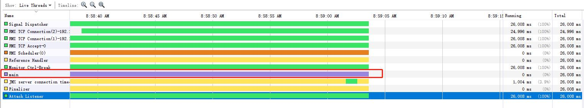
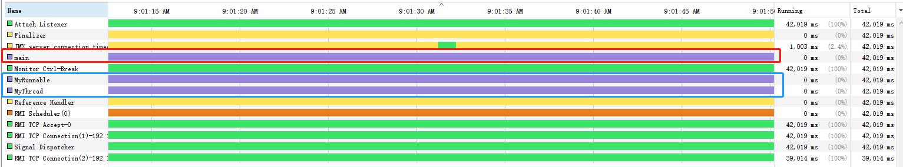

原文连接:https://www.cnblogs.com/liebrother/p/11546683.html

Java 多线程系列文章第 5 篇。
什么是线程
试想一下没有线程的程序是怎么样的？百度网盘在上传文件时就无法下载文件了，得等文件上传完成后才能下载文件。这个我们现在看起来很反人性，因为我们习惯了一个程序同时可以进行运行多个功能，而这些都是线程的功劳。
之前的文章 进程知多少 中讲到，为了实现多个程序并行执行，引入了进程概念。现在引入线程是为了让一个程序能够并发执行。
线程的组成
线程ID：线程标识符。
当前指令指针（PC）：指向要执行的指令。
寄存器集合：存储单元寄存器的集合。
堆栈：暂时存放数据和地址，一般用来保护断点和现场。
线程与进程区别
线程和进程之间的区别，我觉得可以用这个例子来看出两者的不同，进程就是一栋房子，房子住着 3 个人，线程就是住在房子里的人。进程是一个独立的个体，有自己的资源，线程是在进程里的，多个线程共享着进程的资源。
线程状态
我们看到 Java 源代码里面，线程状态的枚举有如下 6 个。
public enum State {
//新建状态
NEW,
//运行状态
RUNNABLE,
//阻塞状态
BLOCKED,
//等待状态
WAITING,
//等待状态（区别在于这个有等待的时间）
TIMED_WAITING,
//终止状态
TERMINATED;
}下面给这 6 个状态一一做下解释。
NEW：新建状态。在创建完 Thread ，还没执行 start() 之前，线程的状态一直是 NEW。可以说这个时候还没有真正的一个线程映射着，只是一个对象。
RUNNABLE：运行状态。线程对象调用 start() 之后，就进入 RUNNABLE 状态，该状态说明在 JVM 中有一个真实的线程存在。
BLOCKED：阻塞状态。线程在等待锁的释放，也就是等待获取 monitor 锁。
WAITING：等待状态。线程在这个状态的时候，不会被分配 CPU，而且需要被显示地唤醒，否则会一直等待下去。
TIMED_WAITING：超时等待状态。这个状态的线程也一样不会被分配 CPU，但是它不会无限等待下去，有时间限制，时间一到就停止等待。
TERMINATED：终止状态。线程执行完成结束，但不代表这个对象已经没有了，对象可能还是存在的，只是线程不存在了。
线程既然有这么多个状态，那肯定就有状态机，也就是在什么情况下 A 状态会变成 B 状态。下面就来简单描述一下。
结合下图，我们 new 出线程类的时候，就是 NEW 状态，调用 start() 方法，就进入了 RUNNABLE 状态，这时如果触发等待，则进入了 WAITING 状态，如果触发超时等待，则进入 TIMED_WAITING 状态，当访问需要同步的资源时，则只有一个线程能访问，其他线程就进入 BLOCKED 状态，当线程执行完后，进入 TERMINATED 状态。

其实在 JVM 中，线程是有 9 个状态，如下所示，有兴趣的同学可以深入了解一下。
javaClasses.hpp
enum ThreadStatus {
NEW = 0,
RUNNABLE = JVMTI_THREAD_STATE_ALIVE + // runnable / running
JVMTI_THREAD_STATE_RUNNABLE,
SLEEPING = JVMTI_THREAD_STATE_ALIVE + // Thread.sleep()
JVMTI_THREAD_STATE_WAITING +
JVMTI_THREAD_STATE_WAITING_WITH_TIMEOUT +
JVMTI_THREAD_STATE_SLEEPING,
IN_OBJECT_WAIT = JVMTI_THREAD_STATE_ALIVE + // Object.wait()
JVMTI_THREAD_STATE_WAITING +
JVMTI_THREAD_STATE_WAITING_INDEFINITELY +
JVMTI_THREAD_STATE_IN_OBJECT_WAIT,
IN_OBJECT_WAIT_TIMED = JVMTI_THREAD_STATE_ALIVE + // Object.wait(long)
JVMTI_THREAD_STATE_WAITING +
JVMTI_THREAD_STATE_WAITING_WITH_TIMEOUT +
JVMTI_THREAD_STATE_IN_OBJECT_WAIT,
PARKED = JVMTI_THREAD_STATE_ALIVE + // LockSupport.park()
JVMTI_THREAD_STATE_WAITING +
JVMTI_THREAD_STATE_WAITING_INDEFINITELY +
JVMTI_THREAD_STATE_PARKED,
PARKED_TIMED = JVMTI_THREAD_STATE_ALIVE + // LockSupport.park(long)
JVMTI_THREAD_STATE_WAITING +
JVMTI_THREAD_STATE_WAITING_WITH_TIMEOUT +
JVMTI_THREAD_STATE_PARKED,
BLOCKED_ON_MONITOR_ENTER = JVMTI_THREAD_STATE_ALIVE + // (re-)entering a synchronization block
JVMTI_THREAD_STATE_BLOCKED_ON_MONITOR_ENTER,
TERMINATED = JVMTI_THREAD_STATE_TERMINATED
};Java 线程实现
下面讲一讲在 Java 中如何创建一个线程。众所周知，实现 Java 线程有 2 种方式：继承 Thread 类和实现 Runnable 接口。
继承 Thread 类
继承 Thread 类，重写 run() 方法。
class MyThread extends Thread {
@Override
public void run() {
System.out.println("MyThread");
}
}实现 Runnable 接口
实现 Runnable 接口，实现 run() 方法。
class MyRunnable implements Runnable {
public void run() {
System.out.println("MyRunnable");
}
}这 2 种线程的启动方式也不一样。MyThread 是一个线程类，所以可以直接 new 出一个对象出来，接着调用 start() 方法来启动线程；而 MyRunnable 只是一个普通的类，需要 new 出线程基类 Thread 对象，将 MyRunnable 对象传进去。
下面是启动线程的方式。
public class ThreadImpl {
public static void main(String[] args) {
MyThread myThread = new MyThread();
Thread myRunnable = new Thread(new MyRunnable());
System.out.println("main Thread begin");
myThread.start();
myRunnable.start();
System.out.println("main Thread end");
}
}打印结果如下：
main Thread begin
main Thread end
MyThread
MyRunnable看这结果，不像咱们之前的串行执行依次打印，主线程不会等待子线程执行完。
敲重点：不能直接调用 run()，直接调用 run() 不会创建线程，而是主线程直接执行 run() 的内容，相当于执行普通函数。这时就是串行执行的。看下面代码。
public class ThreadImpl {
public static void main(String[] args) {
MyThread myThread = new MyThread();
Thread myRunnable = new Thread(new MyRunnable());
System.out.println("main Thread begin");
myThread.run();
myRunnable.run();
System.out.println("main Thread end");
}
}打印结果：
main Thread begin
MyThread
MyRunnable
main Thread end从结果看出只是串行的，但看不出没有线程，我们看下面例子来验证直接调用 run() 方法没有创建新的线程，使用 VisualVM 工具来观察线程情况。
我们对代码做一下修改，加上 Thread.sleep(1000000) 让它睡眠一段时间，这样方便用工具查看线程情况。
调用 run() 的代码：
public class ThreadImpl {
public static void main(String[] args) {
MyThread myThread = new MyThread();
myThread.setName("MyThread");
Thread myRunnable = new Thread(new MyRunnable());
myRunnable.setName("MyRunnable");
System.out.println("main Thread begin");
myThread.run();
myRunnable.run();
System.out.println("main Thread end");
try {
Thread.sleep(1000000);
} catch (InterruptedException e) {
e.printStackTrace();
}
}
}
class MyThread extends Thread {
@Override
public void run() {
System.out.println("MyThread");
try {
Thread.sleep(1000000);
} catch (InterruptedException e) {
e.printStackTrace();
}
}
}
class MyRunnable implements Runnable {
public void run() {
System.out.println("MyRunnable");
try {
Thread.sleep(1000000);
} catch (InterruptedException e) {
e.printStackTrace();
}
}
}运行结果：
main Thread begin
MyThread
只打印出 2 句日志，观察线程时也只看到 main 线程，没有看到 MyThread 和 MyRunnable 线程，印证了上面咱们说的：直接调用 run() 方法，没有创建线程。
下面我们来看看有
调用 start() 的代码：
public class ThreadImpl {
public static void main(String[] args) {
MyThread myThread = new MyThread();
myThread.setName("MyThread");
Thread myRunnable = new Thread(new MyRunnable());
myRunnable.setName("MyRunnable");
System.out.println("main Thread begin");
myThread.start();
myRunnable.start();
System.out.println("main Thread end");
try {
Thread.sleep(1000000);
} catch (InterruptedException e) {
e.printStackTrace();
}
}
}运行结果：
main Thread begin
main Thread end
MyThread
MyRunnable
所有日志都打印出来了，并且通过 VisualVM 工具可以看到 MyThread 和 MyRunnable 线程。看到了这个结果，切记创建线程要调用 start() 方法。
今天就先讲到这，继续关注后面的内容。
推荐阅读
后台回复『设计模式』可以获取《一故事一设计模式》电子书
觉得文章有用帮忙转发&点赞，多谢朋友们！